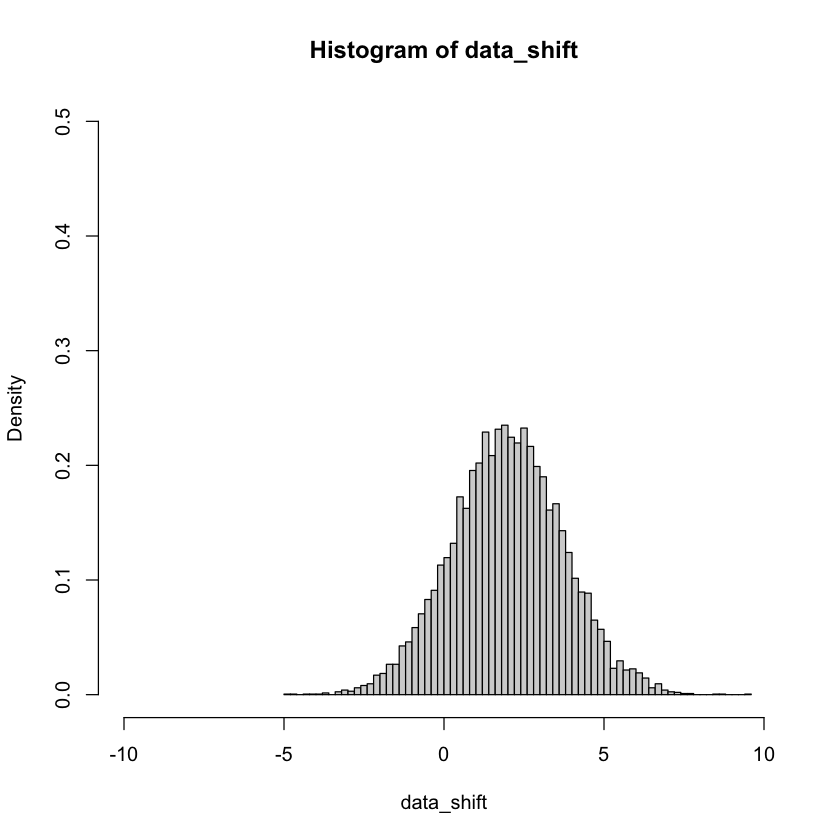

A continuous random variable with cumulative distribution function \(F\) has the median value \(m\) such that \(F(m) = 0.5\). That is, a random variable is just as likely to be larger than its median as it is to be smaller. A continuous random variable with density \(f\) has the mode value \(x\) for which \(f(x)\) attains its maximum. For each of the following three random variables, \((i)\) state the density function, \((ii)\) compute the median, mode and mean for the random variable, and \((iii)\) Provide at least one graph for the density function using values of the parameter(s) that you select. Indicate the median, mode, and mean values on your graph. (The purpose of this problem is to see the relative locations of the median, mode, and mean for the different random variables).
a)\(W\) which is uniformly distributed over the interval \([a, b]\), for some value \(a,b \in \mathbb{R}\).
\((i)\) state the density function
\[f(w) = \frac{1}{b - a} \quad \text{for}\quad a \leq w \leq b\]
\((ii)\) compute the median, mode and mean for the random variable
Mode - Since all values [a,b] are equally likely in a uniform random distribution there is no mode that can be calculated, the actual mode in a specific distribution is equally likely to be any value in [a,b] or there may be multiple modes.
\((iii)\) Provide at least one graph for the density function using values of the parameter(s) that you select
a <-100b <-110samples <-1000000data <-runif(samples, a, b)mean_unif <-mean(data)median_unif <-median(data)mode_unif <-density(data)$x[which.max(density(data)$y)]hist(data, breaks =100, main =paste("Uniform distribution of" ,samples, "samples from", a, "to", b), xlab ="Value",freq =FALSE)abline(v = mean_unif, col ="red", lwd =2)text(mean_unif, 10500, labels ="Mean", pos =4)abline(v = median_unif, col ="blue", lwd =2)text(median_unif, 10500, labels ="Median", pos =2)abline(v = mode_unif, col ="orange", lwd =2)text(mode_unif, 10500, labels ="Mode", pos =2)print(paste("Mean =",mean_unif))print(paste("Median =",median_unif))print(paste("Mode =", mode_unif))
For this problem, we’re going to visualize what’s happening when we go between different normal distributions.
Part A)
Draw at least \(10000\) samples from the standard normal distribution \(N(0,1)\) and store the results. Make a density histogram of these samples. Set the \(x\)-limits for your plot to \([-10,10]\) and your \(y\)-limits to \([0,0.5]\) so we can compare with the plots we’ll generate in Parts B-D.
Part b) Now generate \(10000\) samples from a \(N(2,3)\) distribution and plot a histogram of the results, with the same \(x\)-limits and \(y\)-limits. Does the histogram make sense based on the changes to parameters?
Note: Be careful with the parameters for rnorm. It may help to check the documentation.
This plot does look correct based on the given parameters for \(N(2,3)\). A mean of 2 should shift the entire distribution 2 units to the right to be centered on \(x=2\). Changing the variance to 3 should spread the distribution out by approximately \(\sqrt3\), or the standard deviation.
Part c)
Suppose we are only able to sample from the standard normal distribution \(N(0,1)\). Could we take those samples and perform a simple transformation so that they’re samples from \(N(2,3)\)? Try this, and plot another histogram of the transformed data, again with the same axes. Does your histogram based of the transformed data look like the histogram from Part B?
# take the standard normal data and # spread it out by the new sd and shift by the new meandata_shift <- (data_standard_norm *sqrt(3) +2) hist(data_shift,breaks =100,freq =FALSE,xlim =c(-10, 10),ylim =c(0, 0.5))

We can create any other normal distribution from the standard normal distribution by spreading the values out by a factor equal to the square root of the variance (the standard deviation, which in this example is \(\sqrt 3\)) and then shifting by the new mean \(\mu\), which in this example is 2. (Order of operations matters in this process.)
\[N(2,3) = (N(0,1) \cdot \sqrt3) + 2\]
Part d)
But can you go back the other way? Take the \(N(2,3)\) samples from Part B and transform them into samples from \(N(0,1)\)? Try a few transformations and make a density histogram of your transformed data. Does it look like the plot of \(N(0,1)\) data from Part A?
We can reverse the process and convert a non-standard normal distribution to a normal distribution by subtracting the mean to shift the distribution back to be centered on zero, and then by “unspreading” by dividing by the standard deviation.